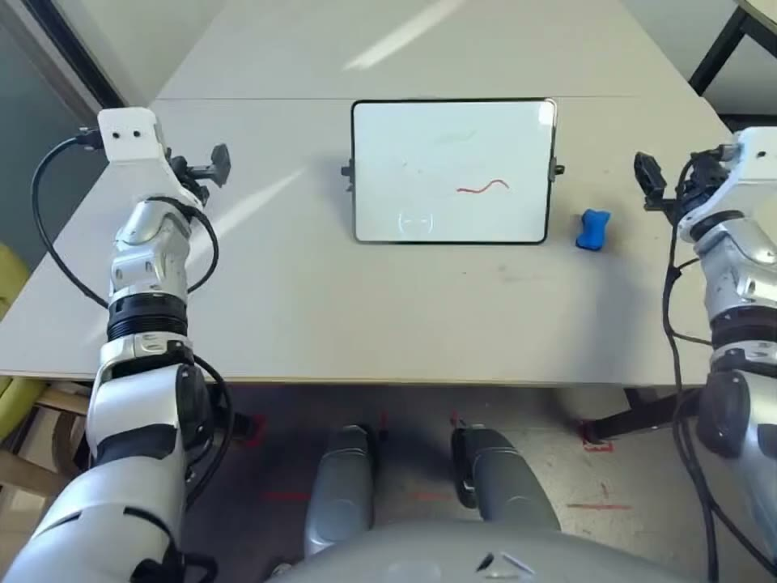

PhysicsLENS · Deformation
Clean the blackboard with the eraser
MAGI-1 4.5B distill · Unitree G1 · Dex1 grippers · #080 · hidden-property prompt

Human annotation
One annotator's final record from the publisher's consolidated_annotations.csv (one annotation per clip; no inter-annotator agreement exists). Scales and label definitions are quoted from the PhysicsLENS paper, Appendix B, Tables 8–9. JSON
Scores
Physical plausibility (P)3 / 4
- 1 — clearly breaks physics, including clipping, floating, objects appearing or disappearing, or impossible motion.
- 2 — mostly implausible, with one clear issue or several smaller issues.
- 3 — mostly plausible, with minor oddities only.
- 4 — physically realistic.
P01 = 0.6667 · plausible (P≥3) = 1
Action completion (A)no
Judge whether the requested task is completed by the end of the clip, even if the process is physically unrealistic.
A = 0
Hidden-property adherence (H)1 / 4
- 1 — property completely ignored; the outcome resembles a generic response.
- 2 — mostly ignored, with only a faint or inconsistent indication.
- 3 — mostly followed, but with incorrect magnitude, timing, or degree.
- 4 — fully and correctly reflected.
H01 = 0 · followed (H≥3) = 0
Violation labels · multi-select, 8 labels
| Label | Selected | Definition (paper, Table 9) |
|---|---|---|
| Causality | 0 | An effect occurs without a visible cause, or events occur in an impossible order. |
| Collision | 0 | Objects pass through one another or fail to exhibit an expected response after impact. |
| Contact | 0 | An object floats without support, rests at an incorrect contact point, or fails to maintain visible contact. |
| Deformation | 1 · listed 1st | A rigid object warps or melts, or a soft object fails to deform under an interaction that should alter its shape. |
| Fluid | 0 | Pouring, splashing, containment, or other liquid behavior is physically inconsistent. |
| Friction | 0 | Sliding, sticking, or gripping behavior is inconsistent with the visible interaction or stated surface condition. |
| Gravity | 0 | An object floats, falls incorrectly, or otherwise fails to respond plausibly to gravity. |
| Momentum | 0 | An object accelerates or changes motion without a supporting interaction, including apparent creation or loss of energy. |
| Collision ∪ Contact | 0 | The paper merges Contact into Collision in all analyses (its seven domains have one collision family). |
Issue description
hands moved a bit unnaturally
- Annotator
- A5
- Prompt set
- unobservable
Hidden-property prompt
- Hidden property
- surface_condition: extremely slippery, eraser has little effect
- Expected outcome
- The eraser slides across the board with minimal removal of the marker scribbles.
- Failure signature
- The eraser effectively wipes the board, removing marker scribbles completely as if the surface were not extremely slippery.
Normalized record
| P | P01 | P≥3 | A | H | H01 | H≥3 | Causality | Collision | Contact | Deformation | Fluid | Friction | Gravity | Momentum | Coll∪Cont |
|---|---|---|---|---|---|---|---|---|---|---|---|---|---|---|---|
| 3 | 0.6667 | 1 | 0 | 1 | 0 | 0 | 0 | 0 | 0 | 1 | 0 | 0 | 0 | 0 | 0 |
P01 = (P−1)/3, H01 = (H−1)/3; thresholds P≥3 and H≥3 are the paper's. Label columns: 1 = selected by the annotator, 0 = not selected (not a confirmation of correctness).
Publisher record 080_unobs_magi45bd.json
{
"family": "magi",
"conditioning": "text+image",
"checkpoint": "4.5B_distill",
"params": "4.5B",
"model": "sand-ai/MAGI-1 ckpt/magi/4.5B_distill",
"distill": true,
"shortcut_mode": "8,16,16",
"seconds": 5.0,
"prompt": "Scene: A rectangular wooden table holds a white dry-erase board in its center. The board has marker scribbles on it. Nearby, to the right of the board, a small eraser is placed. The robot has two metallic arms: the left arm is positioned slightly toward the board and the right arm is close to the eraser. The dry-erase board is extremely slippery, making it difficult for the eraser to effectively wipe away marks.\nAction: The robot grasps the eraser with its right hand and wipes it across the board.",
"negative_prompt": null,
"seed": 0,
"steps": 16,
"cfg_number": 1,
"text_scales": [
7.5,
7.5,
7.5,
0.0,
0.0
],
"gen_seconds": 227.0,
"requested_num_frames": 116,
"requested_height": 720,
"requested_width": 960,
"width": 960,
"height": 720,
"num_frames": 120,
"fps": 24.0,
"peak_vram_gib": 27.9,
"testset_id": "80",
"source_video": "080_unitree_g1dex1_erase_board_ep0.mp4",
"source_frame_idx": 0,
"start_frame": "data/start_frames/080_unitree_g1dex1_erase_board_ep0_frame0.png",
"source_size": "640x480",
"task": "Clean the blackboard with the eraser.",
"out_name": "080_unobs_magi45bd.mp4",
"model_tag": "magi45bd",
"prompt_set": "unobservable",
"prompt_id": "080_unobs",
"task_group": "wiping",
"observability": "unobservable",
"hidden_property": "surface_condition",
"hidden_property_value": "extremely slippery, eraser has little effect",
"expected_outcome": "The eraser slides across the board with minimal removal of the marker scribbles.",
"failure_signature": "The eraser effectively wipes the board, removing marker scribbles completely as if the surface were not extremely slippery."
}